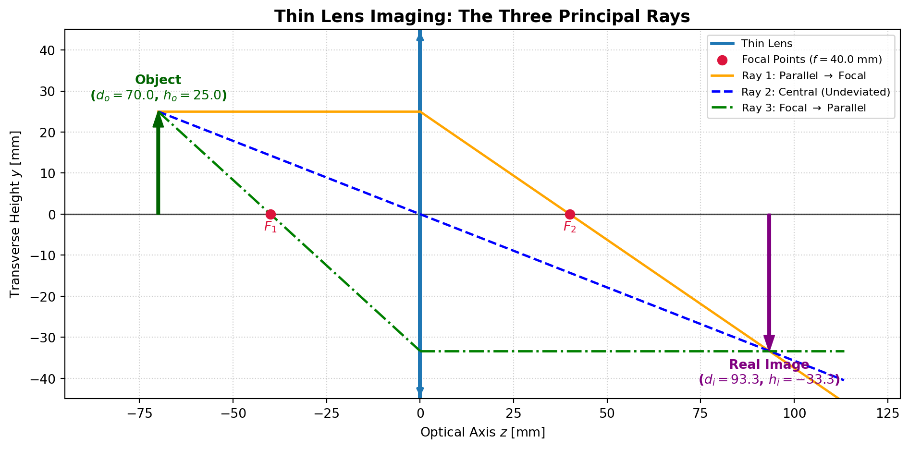

Code
import numpy as np
import matplotlib.pyplot as plt
f = 40.0 # Focal length [mm]
d_o = 70.0 # Object distance [mm]
h_o = 25.0 # Object height [mm]
# Compute image position and height using thin lens formula
d_i = 1.0 / (1.0/f - 1.0/d_o)
m = -d_i / d_o
h_i = m * h_o
fig, ax = plt.subplots(figsize=(10, 5))
# Optical axis
ax.axhline(0, color='black', lw=1.2, linestyle='-', alpha=0.7)
# Lens plane
ax.axvline(0, color='#1f77b4', lw=2.5, linestyle='-', label='Thin Lens')
ax.plot([0, 0], [-45, 45], color='#1f77b4', lw=3)
# Lens double-arrow symbols
ax.annotate('', xy=(0, 45), xytext=(0, 35), arrowprops=dict(arrowstyle="->", color='#1f77b4', lw=2))
ax.annotate('', xy=(0, -45), xytext=(0, -35), arrowprops=dict(arrowstyle="->", color='#1f77b4', lw=2))
# Focal points
ax.scatter([-f, f], [0, 0], color='crimson', s=50, zorder=5, label=f'Focal Points ($f = {f}$ mm)')
ax.text(-f, -4, '$F_1$', ha='center', color='crimson', fontweight='bold')
ax.text(f, -4, '$F_2$', ha='center', color='crimson', fontweight='bold')
# Object (Arrow)
ax.annotate('', xy=(-d_o, h_o), xytext=(-d_o, 0),
arrowprops=dict(facecolor='darkgreen', edgecolor='darkgreen', width=2, headwidth=8))
ax.text(-d_o, h_o + 3, f'Object\n($d_o={d_o}$, $h_o={h_o}$)', ha='center', color='darkgreen', fontweight='bold')
# Image (Inverted Arrow)
ax.annotate('', xy=(d_i, h_i), xytext=(d_i, 0),
arrowprops=dict(facecolor='purple', edgecolor='purple', width=2, headwidth=8))
ax.text(d_i, h_i - 8, f'Real Image\n($d_i={d_i:.1f}$, $h_i={h_i:.1f}$)', ha='center', color='purple', fontweight='bold')
# Ray 1: Parallel to axis, then through focal point F2
ax.plot([-d_o, 0], [h_o, h_o], color='orange', lw=1.8, label='Ray 1: Parallel $\\to$ Focal')
ax.plot([0, d_i + 20], [h_o, h_o - (h_o/f)*(d_i + 20)], color='orange', lw=1.8)
# Ray 2: Through optical center (undeviated)
slope_center = -h_o / d_o
ax.plot([-d_o, d_i + 20], [h_o, slope_center * (d_i + 20)], color='blue', lw=1.8, linestyle='--', label='Ray 2: Central (Undeviated)')
# Ray 3: Through front focal point F1, exits parallel
slope_f1 = (0 - h_o) / (-f - (-d_o))
y_at_lens = h_o + slope_f1 * d_o
ax.plot([-d_o, 0], [h_o, y_at_lens], color='green', lw=1.8, linestyle='-.', label='Ray 3: Focal $\\to$ Parallel')
ax.plot([0, d_i + 20], [y_at_lens, y_at_lens], color='green', lw=1.8, linestyle='-.')
ax.set_xlim(-d_o - 25, d_i + 35)
ax.set_ylim(-45, 45)
ax.set_xlabel('Optical Axis $z$ [mm]')
ax.set_ylabel('Transverse Height $y$ [mm]')
ax.set_title('Thin Lens Imaging: The Three Principal Rays', fontsize=13, fontweight='bold')
ax.grid(True, linestyle=':', alpha=0.6)
ax.legend(loc='upper right', frameon=True, fontsize='small')
plt.tight_layout()
plt.show()